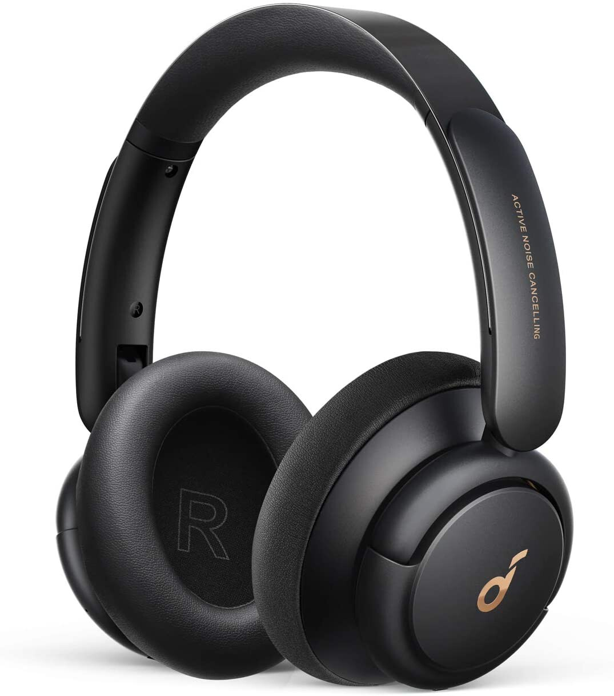
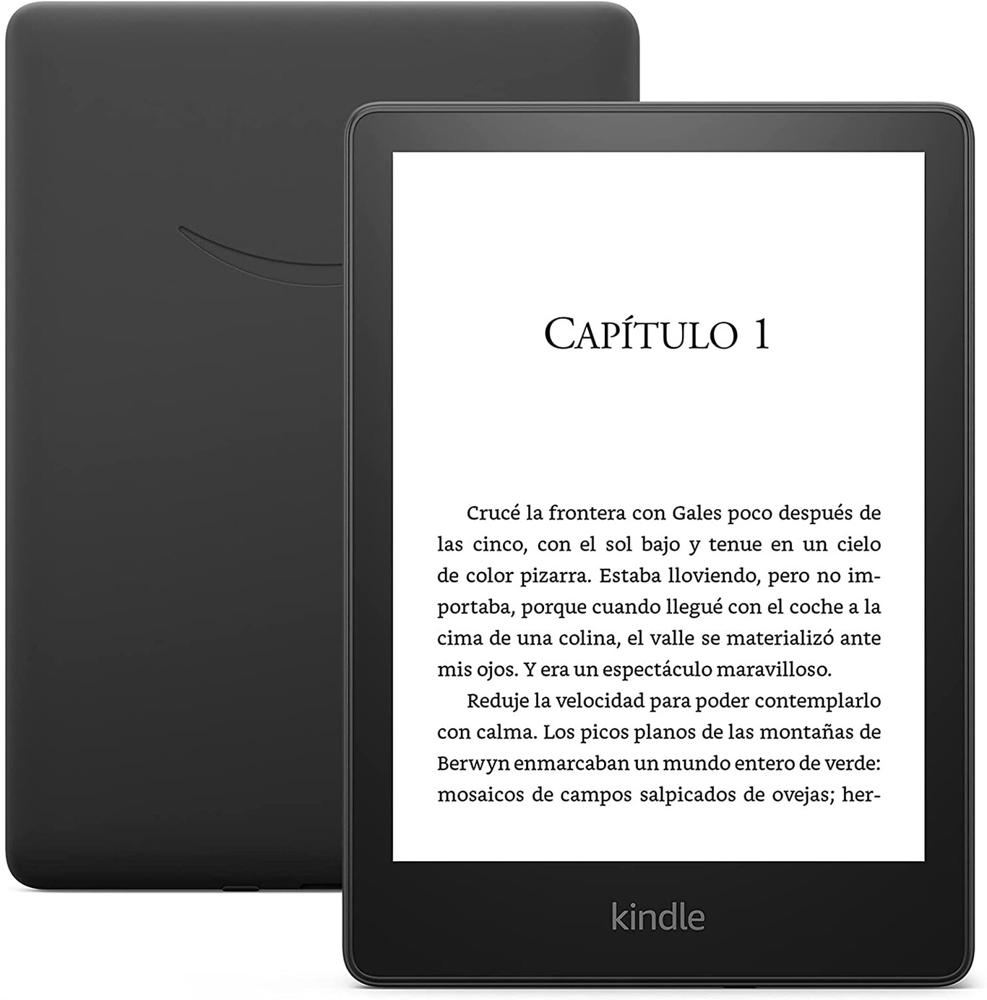
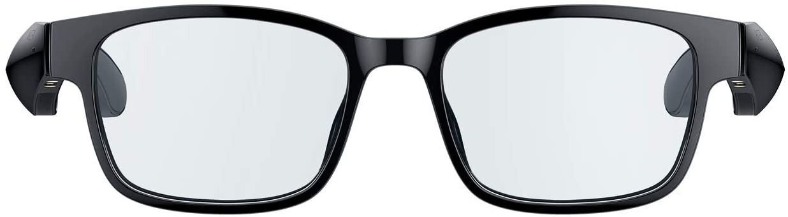
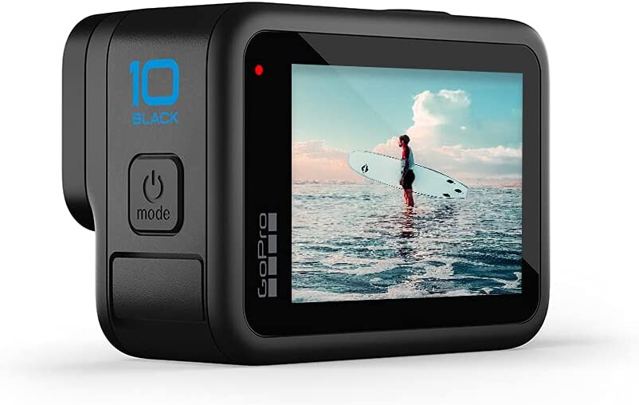
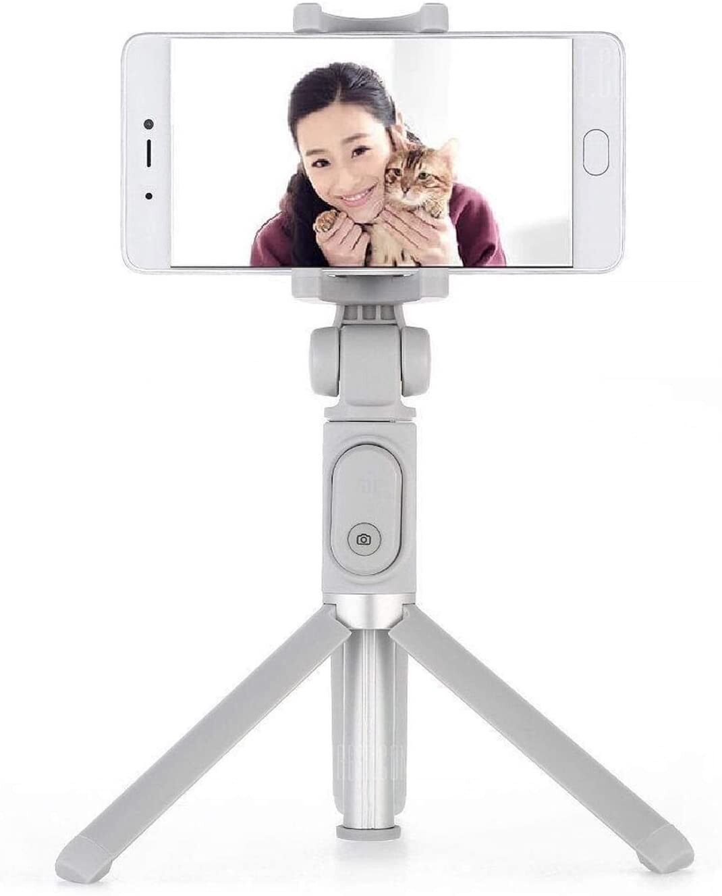

5 gadgets y accesorios para llevar estas vacaciones en tu maleta
Contents
5 gadgets y accesorios para llevar estas vacaciones en tu maleta#

Si te vas de vacaciones, en algún momento tendrás que preparar tu maleta: bañadores, toalla, gafas de sol…y tecnología. Porque estos días de relax y desconexión también te vendrá genial estos gadgets y accesorios para disfrutar de tu ocio o solventarán problemas tan comunes como la ausencia de enchufes en la habitación de tu hotel. A continuación te proponemos algunos dispositivos y accesorios para disfrutar más de tus vacaciones.
Unos auriculares con cancelación de ruido#

Unos auriculares con cancelación de ruido te van a resultar muy útiles para escuchar tu podcast favorito o tu música estés donde estés, ya sea en el aeropuerto esperando tu vuelo, en el metro o en medio de una playa repleta de gente. Los Sony WH-1000XM5 son el modelo de referencia en cuanto a tecnología de cancelación de ruido, pero hay alternativas tan solventes y atractivas en calidad precio como estos Soundcore Life Q30 (59 euros con cupón), con sonido Hi-Res, ecualizador y autonomía de 40 horas
Un libro electrónico#

Si no tienes muy claro qué libro llevarte en la maleta, llévate un montón dentro del Kindle Paperwhite (139 euros), el lector de libros electrónicos con mejor relación calidad precio de Amazon. Esta nueva generación mantiene la luz en la pantalla, 8GB para cientos de libros y ojo, sube hasta las 6,8” pulgadas para reproducir más texto por pantalla.
Unas gafas de sol (¿”inteligentes”?)#

Si tu destino vacacional veraniego implica buen tiempo, unas gafas de sol se antojan imprescindibles para proteger tus ojos pero esto es Xataka y si estás aquí es porque probablemente te gusta la tecnología. ¿Por qué no comprar unas gafas “inteligentes”?
Uno de los modelos más interesantes prestaciones coste son las Razer Anzu (125 euros) con lentes polarizadas y conectividad Bluetooth. Con ellas, además de protegerte del sol, podrás escuchar música y hacer o responder llamadas. Su autonomía ronda los cinco días.
Una buena cámara sumergible#

Las cámaras son un poco como las bicicletas, florecen con el buen tiempo. Si además te vas a una playa con aguas cristalinas y peces nadando a tu alrededor, el snorkel y la GoPro HERO10 Black (429 euros) son una combinación ganadora para disfrutar en el momento y deleitarte después con las fotos y los vídeos. La última generación de la cámara de acción más popular es fácil de usar, compacta y ambiciosa, ya que graba vídeo hasta a 5.3K@60.
Un trípode-palo selfie para tu móvil#

Una foto de grupo, un atardecer sobre un acantilado, un selfie con un mojito… vas a tener momentos de sobra donde quieras tomar una foto y te falten manos: para colocar el móvil a la distancia adecuada, para disparar y salir en la foto, para no salir con un cabezón enorme… para todos ellos el Xiaomi Mi Selfie Stick (18 euros) te va a venir de cine. No es el trípode más completo, pero es un tres en uno que funciona como palo selfie y viene con disparador. Con Bluetooth y regulable en altura e inclinación. La guinda del pastel es que doblado es tan compacto que cabe en cualquier lado.